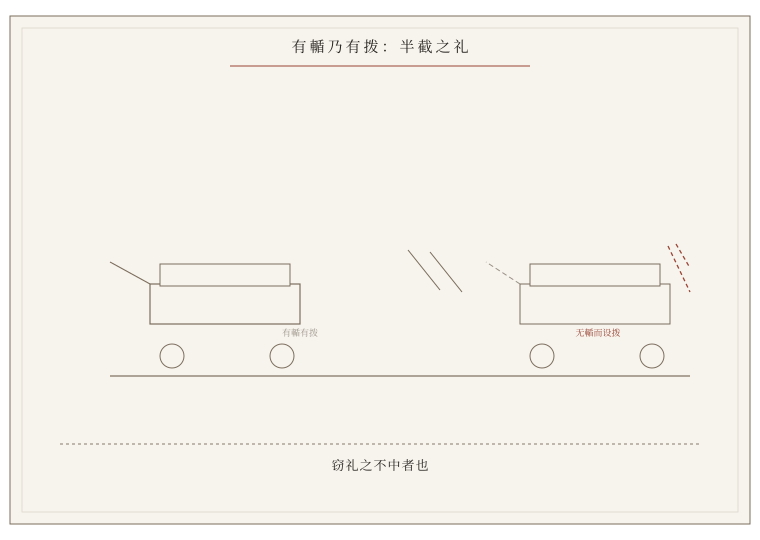

檀弓下 · 四·六十四 · 第 389 课
孺子之丧，哀公欲设拨，问于有若。有若曰：「其可也。君之三臣犹设之。」颜柳曰：「天子龙輴而椁幬，诸侯輴而设幬，为榆沈故设拨。三臣者废輴而设拨，窃礼之不中者也，而君何学焉？」
说什么事：哀公的少子死了，哀公想设「拨」（牵引丧车的绳）。问有若，有若说：「可以啊。君的三家之臣尚且设了。」颜柳说：「天子用龙輴，外覆椁幬；诸侯用輴，设幬；因为有榆沈，才设拨。那三家之臣已废了輴，却还设拨，是偷了礼而没偷着正当处的，君何必学他们？」
落在哪一层：以「中」定礼。取其表不取其里，是「窃礼之不中」。
为何编在此位：上节论受吊之地，此节论丧车之器。一在地，一在物，皆论「位当不当」。
【经】孺子之丧，哀公欲设拨，问于有若。有若曰：「其可也。君之三臣犹设之。」颜柳曰：「天子龙輴而椁幬，诸侯輴而设幬，为榆沈故设拨。三臣者废輴而设拨，窃礼之不中者也，而君何学焉？」
【注】鲁哀公之少子。／拨，可拨引輴车，所谓紼。／犹，尚也。以臣况子也。三臣，仲孙、叔孙、季孙氏。／輴，殡车也。画辕为龙。幬，覆也。殡以椁覆棺而涂之。／輴不画龙。／以水浇榆白皮之汁，有急以泼地，于引輴车滑。／止其学非礼也。废，去也。紼系于輴，三臣于礼去輴，今有紼，是用輴，僭礼也。殡礼，大夫菆置西序，士掘肂见衽。
【疏】此论谏哀公不得学僭礼之事。／颜柳以有若对非其实，恐哀公从之，以其正礼而言。天子之殡，则以龙輴，谓画輴车辕为龙，载柩于上，累材作椁，而题凑其木，幬覆棺上，而后涂之。其诸侯则以輴载柩，不画为龙，亦累木为椁，设木于上以幬之，不为题凑，直横木覆之，亦泥涂其上。以其有輴，须设榆沈，备拟牵引。为有榆沈，故须设拨。拨谓紼也。今三臣者，依礼废輴，不合用殡。今乃设拨用輴，是盗窃于礼，不中法式，而君何得学焉？／《丧大记》「大夫二綍二碑」，是大夫有綍，綍即紼也。又注《既夕礼》云：「大夫以上始有四周，谓之輴。」是大夫有輴也。此云三臣于礼去輴，用輴僭礼，不同者，大夫以柩朝庙之时用輴繂，惟殡时用輁轴，不得用輴紼。此文据殡时，《大记》及《既夕礼》谓朝庙及下棺也。／「大夫菆置西序，士掘肂见衽」者，是《丧大记》文。谓菆丛其木，以障三面，倚于西序。肂谓穿地为坎，深浅见其棺盖上小要之衽。
孺子 哀公之少子。
拨 牵引丧车的绳，即紼。
輴 载柩之殡车。
龙輴 画辕为龙的輴，天子所用。
椁幬 以椁覆棺而涂之。
榆沈 榆白皮汁，用以泼地，使车滑利。
三臣 仲孙、叔孙、季孙三家。
废輴 去輴不用。
窃礼之不中 偷了礼却没有偷着正当处。
何学焉 何必学它。
哀公的少子死了，哀公想设拨，问有若。有若说：「可以啊。君的三家之臣尚且设了。」颜柳说：「天子用龙輴外覆椁幬，诸侯用輴设幬，因为有榆沈才设拨。那三家之臣已废了輴，却还设拨，是偷礼而没偷着正当处的，君何必学他们？」
此章记一次请示与两次答复。第一次答得太顺，第二次答得太硬。
顺的那一句，险些让君学了一个半截的礼。
第一层 「欲设拨」 拨者，引輴之绳。
要设拨，先得有輴。 此一节全部的关键，在此一先后。
第二层 有若之答：以臣况子 有若说「君之三臣犹设之」。
注云「犹，尚也。以臣况子也」——用臣下所行，推君之子所当行。
此一推论，看似有理，实已蹈空：他只问「有没有人这样做」，不问「这样做合不合」。
第三层 颜柳之驳：先数其制 颜柳不从「该不该」入手，先摆三级制度：天子龙輴而椁幬，诸侯輴而设幬，三臣废輴而设拨。
三级摆开，问题自明：拨系于輴，无輴而设拨，是一根无主的绳。
第四层 「窃礼之不中」：五字之断 此五字是全章之眼。
「窃」者，取其物而不取其义；「不中」者，取之而不得其处。
三家废輴而设拨，正是此病：留了那个看得见的绳，去了那个看不见的车。
第五层 何以要废輴 疏辨此层最细：大夫朝庙及下棺之时用輴繂（有輴），殡时则用輁轴（无輴）。
故三家在殡时废輴，是依礼；而仍设拨，是不依礼。
此一「一半依礼一半僭」的形态，最难辨，也最易被后人学。
第六层 「而君何学焉」 颜柳末句不是「君不可」，是「君何学」。
此一句留了余地：不是禁止，是问「你学它做什么」。 学一个半截的礼，不如不学。
第七层 两答之比较 有若之答，据「例」；颜柳之答，据「制」。
据例者看人做什么，据制者看礼是什么。 此一章正是《檀弓》对「从众」的警告：众之所行，未必礼之所许。
与今日何干 今之办仪式，多取「别人都这么办」为据，取其形而去其义。
此章给一句：先问有没有车，再问要不要绳。
| 左 | 右 |
|---|---|
| 孺子之丧 | 君之子 |
| 欲设拨 | 取其绳 |
| 有若曰可 | 据例 |
| 三臣犹设之 | 以臣况子 |
| 天子龙輴椁幬 | 一级 |
| 诸侯輴设幬 | 二级 |
| 为榆沈故设拨 | 拨系于輴 |
| 三臣废輴而设拨 | 半截之礼 |
| 窃礼之不中 | 取其形去其义 |
画一辆载柩的丧车，视点平视。车为一具低而宽的车箱，箱上载一具棺，棺外覆一层木框，框上涂着泥。车辕向前伸出，辕上不作画饰。辕端系着两根长绳，绳斜垂至地。车后另画一车，只画车箱与棺，辕端无绳，绳却悬在空中一端无所系。两车之间画一条短横线相连。不画文字。赭色只用在那两根悬空无系的绳端。
